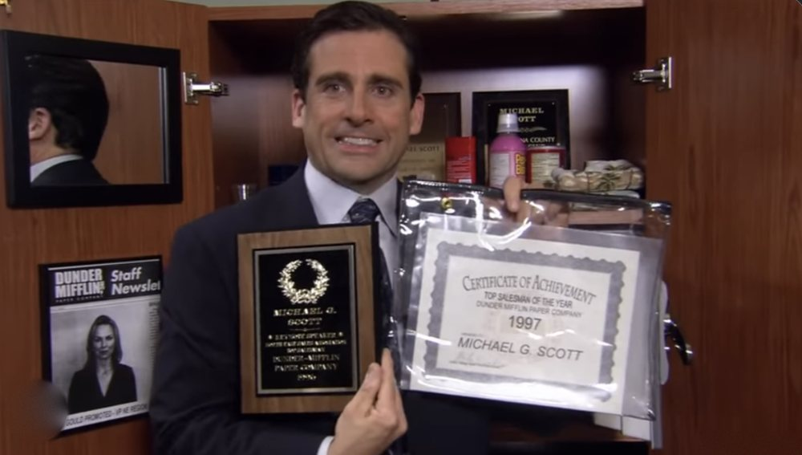
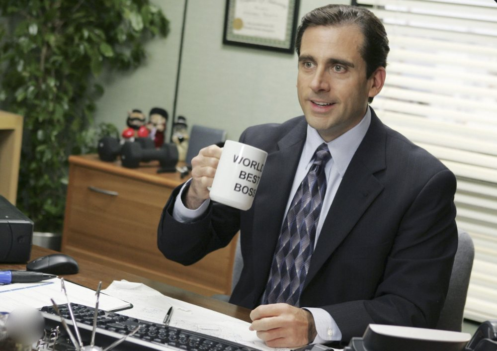
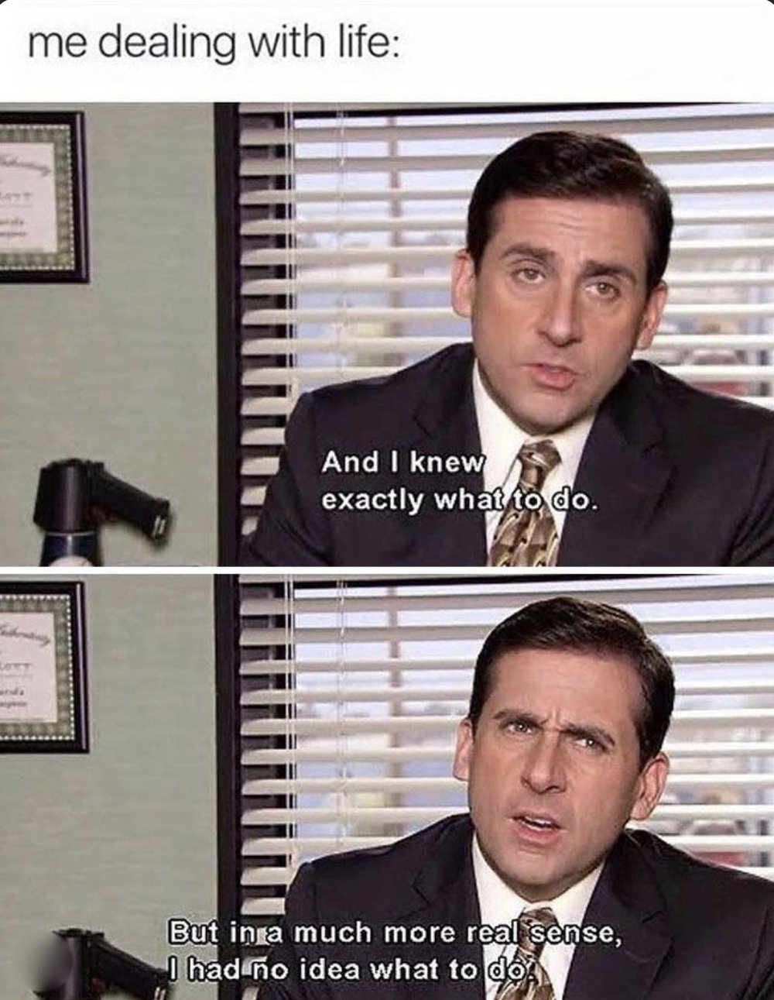
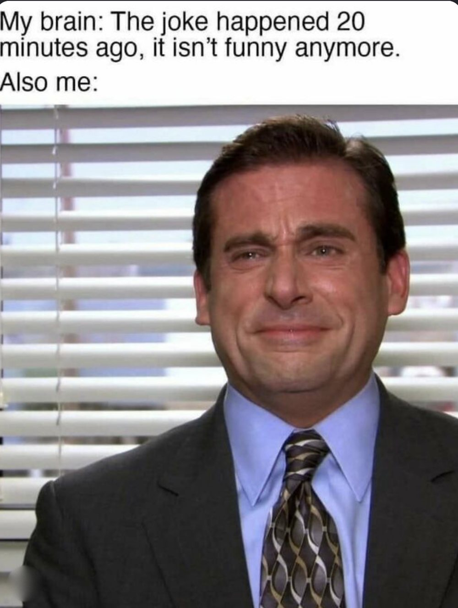
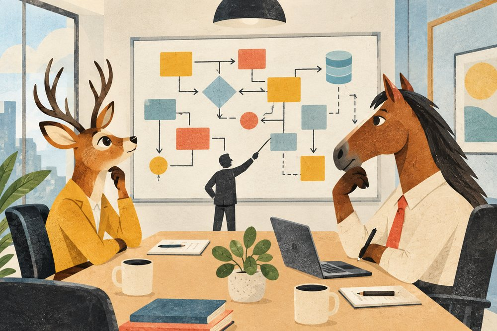
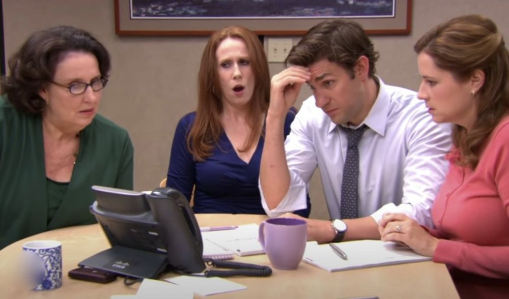
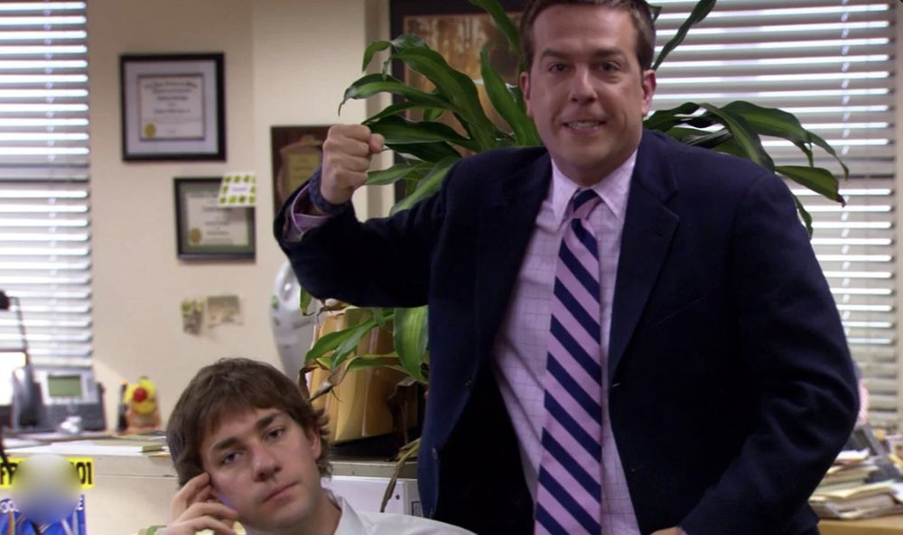
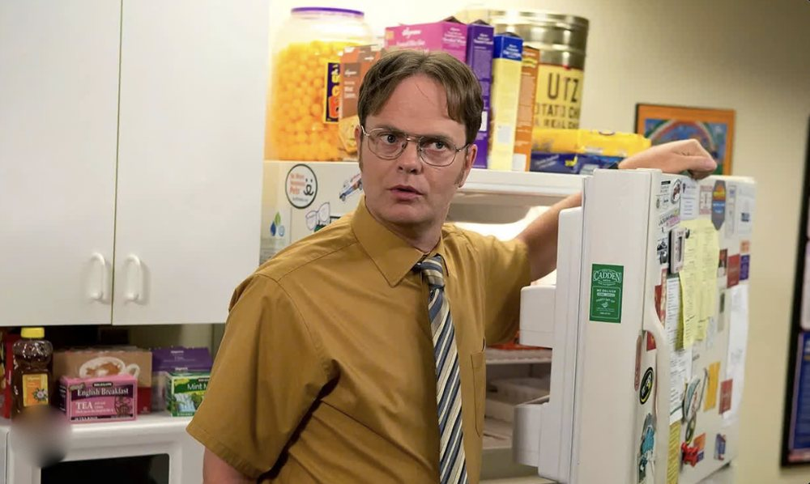
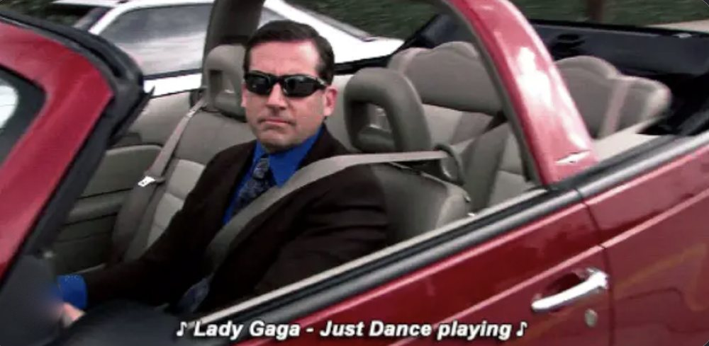

Pierwszy etap masz już za sobą.
Firma wie, że warto z Tobą rozmawiać, a Ty wiesz już, jak wygląda ten proces. Zaczynasz z przewagą.
Memo nr 002 / odprawa przed etapem 2
Screening z HR poszedł świetnie, więc dzisiejsza rozmowa z project managerem to kolejny krok na dobrej drodze, a nie egzamin. PM chce zobaczyć, jak się z Tobą współpracuje, więc wystarczy, że będziesz sobą: konkretnym, ciekawym i spokojnym.

Trzy powody do spokoju
Firma wie, że warto z Tobą rozmawiać, a Ty wiesz już, jak wygląda ten proces. Zaczynasz z przewagą.
Project manager zwykle chce poznać Twój sposób pracy: jak komunikujesz się z zespołem, jak podchodzisz do terminów i zmian. To rozmowa o współpracy, nie quiz.
Możesz sprawdzić, czy projekt, zespół i sposób pracy Ci odpowiadają. Dobre pytania są tu mile widziane.

W głowie: Michael Scott z kubkiem World's Best Boss. Wszyscy się boją.
W rzeczywistości: ogarnięta osoba, która dba o projekt i chce złożyć dobry zespół.
Odprawa przed etapem 2
Użyj prostego schematu: sytuacja, zadanie, co zrobiłeś, jaki był efekt. Jedna dobra historia o współpracy, trudnym terminie albo zmianie wymagań odpowie na większość pytań.
PM nie musi znać każdego szczegółu architektury danych. Pokaż, że potrafisz wyjaśnić, co robisz i po co, tak żeby zrozumiał to każdy w zespole. Dobra analogia działa lepiej niż żargon.
Na przykład: jak wygląda współpraca w zespole, jakie są największe wyzwania projektu i po czym poznacie, że się udał. Takie pytania pokazują, że już myślisz jak członek zespołu.
Checklista przed startem
Zaznaczaj po kolei. Gdy zaświecą się wszystkie, możesz wchodzić.
Zaznacz, co już masz gotowe.
Gdy nie znasz odpowiedzi albo coś pójdzie nie tak


„Nie wiem na pewno, ale zacząłbym od…” pokazuje sposób myślenia, a to właśnie interesuje PM-a.
„Czy możesz powiedzieć więcej o…?” to dobra praktyka pracy z wymaganiami, nie oznaka słabości.
Powiedz, co poszło nie tak, co zrobiłeś i czego się nauczyłeś. Tyle wystarczy.
Weź oddech, uśmiechnij się i idź dalej. Rozmowa jest dłuższa niż jeden moment.

Karta projektu
Zespół projektowy



Sprint na dziś
Spokojne śniadanie i kawa. Przejrzyj swoje historie, ale bez wkuwania.
Piętnaście minut przed: woda, trzy głębokie oddechy i spojrzenie na te trzy kroki.
Rozmowa. Pokaż, jak myślisz i jak współpracujesz. Słuchaj, pytaj, uśmiechaj się.
Po rozmowie: co poszło dobrze? Zapisz to. Potem czekają ciastka.
Na koniec
Pierwszy etap poszedł bez problemu, więc wiesz już, że to działa. Wejdź, bądź sobą i pokaż, jak myślisz. My trzymamy kciuki tak mocno, że Dwight zaczął przygotowywać plan awaryjny na wypadek skurczu.
P.S. Michael radzi: wejdź na rozmowę tak, jakby grała Ci Lady Gaga.
Cała ekipa Dunder Mifflin 🦌🐎
